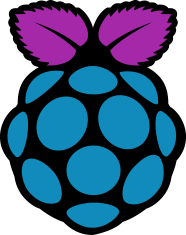

Multiple Cameras
-  Next: Miscellaneous
-
 Previous: Motion Software
Previous: Motion Software
-
 Multiple Cameras
Multiple Cameras
Step 1. Setup your slave pi as you did your host pi. Please install all files as you did before, as the reboot.py and shutdown.py scripts modify them; else, an error may result. You do not need to assign a new domain name to each slave pi; simply use the original domain name. However, you must still complete Step 4 on the Basic Information page.
Step 2. Now that we are using more than one pi, we must change the external port name (Port Range) to 2201, 2201, etc., while keeping the Local Port as 22 as below. You also need to add the camera port for each of your slave pis (only the camera port for the host pi is shown below):
The port range value is the actual port you will use when connecting to your pi via SSH or to your camera from the internet.
Step 3. Go into activate_system.sh and below the line:
/usr/bin/wget -q -O /dev/null "local_ip_address:control_port/0/detection/start"add the same line for the local ip address(es) of your slave pi(s). Please make sure to add the slave pi's lines below the line of the host pi. For example, if you host pi was 192.168.1.80:8086 and your slave pis were 192.168.1.81:8087 and 192.168.1.82:8088, then it would read as follows:
/usr/bin/wget -q -O /dev/null "192.168.1.80:8086/0/detection/start"
/usr/bin/wget -q -O /dev/null "192.168.1.81:8087/0/detection/start"
/usr/bin/wget -q -O /dev/null "192.168.1.82:8088/0/detection/start"Next, do the same for the deactivate_system.sh, pause_motion.sh, check_system.sh, and start.motion.sh files. By doing this, everything will be synced with your smartphone.
Step 4. Remove the phrase:
@reboot cd /home/pi/Desktop && sudo python /home/pi/Desktop/alarm.py >/dev/null 2>&1from automate_tasks.py as we will not be running the alarm script.
Step 5. The easiest method to access all of these cameras on your phone is to download a bookmark manager app, and then enter each camera URL as a different bookmark. Then you simply need to open this app and select the camera you want, and it will pull up the live stream on your browser. Of note, the format of the camera URLs is as follows (refer to input_variables.txt for more details):
domain_name:video_port
Extra Step. The following is actually not needed unless you want your host pi to communicate directly with your slave pi's with SSH. In order for the host pi to communicate with the slave pi(s) when it receives new commands from your smartphone, it will have to ssh to each of the slave pis separately. In order to make this work, you will have to generate a unique passphraseless SSH key for each slave pi. This is done so that the host pi can SSH to the slave pi(s) without having to explicitly specify a password (which is not secure). To do this, in your host Raspberry Pi, type:
ssh-keygen -t rsa -b 2048then simply press enter for all of the following inputs. Next, type:
ssh-copy-id pi@local_ip_addresswhere local_ip_address is the IP address of the slave Raspberry Pi with the camera feed. For the next input, enter the password of that pi.
You will have to perform this process for each of your slave Raspberry Pis. You can now use the command:
ssh -p port_number pi@domain_name; run_commandwithin your host pi to perform a command on one of your slave pis.